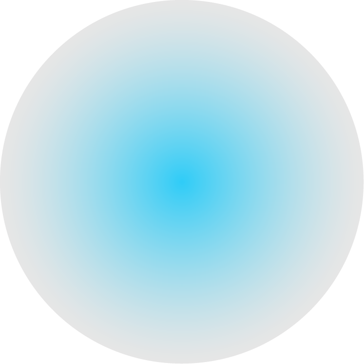

03 - SCIENCE - {The North Pole/Arctic}Point ; Geographic North Pole or Terrestrial North Pole
03 - SCIENCE - {The North Pole/Arctic}Point ; Geographic North Pole or Terrestrial North Pole
03 - SCIENCE - {The North Pole/Arctic}Point ; Geographic North Pole or Terrestrial North Pole
{북극}점

지구의 가장 북쪽 지점
북극해의 가운데에 있으며 {북극}점 지점의 깊이는 4087m이다. {북극}점은 지구 최북단 지점으로서, 남극점과 직경으로 정반대 지점에 위치해 있다. 측지학상으로는 북위 90도의 기준이 되며 진북의 방향을 삼는 데도 기준이 된다. {북극}점을 기준으로 하면 어느 방향이든 남쪽을 향해 가리키게 되며, 모든 경선이 만나는 지점이기에 어느 경도이든 {북극}점이 한 축의 기점이 된다. {북극}점 주변의 위선을 따라 반시계 방향으로 돌면 동쪽을 향하고, 시계 방향으로 돌면 서쪽을 향하게 된다. 그밖에 {북극}점은 북반구의 중앙 지점이기도 하다.
북극해의 가운데에 있으며 {북극}점 지점의 깊이는 4087m이다. {북극}점은 지구 최북단 지점으로서, 남극점과 직경으로 정반대 지점에 위치해 있다. 측지학상으로는 북위 90도의 기준이 되며 진북의 방향을 삼는 데도 기준이 된다. {북극}점을 기준으로 하면 어느 방향이든 남쪽을 향해 가리키게 되며, 모든 경선이 만나는 지점이기에 어느 경도이든 {북극}점이 한 축의 기점이 된다. {북극}점 주변의 위선을 따라 반시계 방향으로 돌면 동쪽을 향하고, 시계 방향으로 돌면 서쪽을 향하게 된다. 그밖에 {북극}점은 북반구의 중앙 지점이기도 하다.

1. 지난 30년 동안 { }의 여름철 해빙이 75% 사라졌다.
2. 2035년 여름엔 { }의 얼음을 볼 수 없다.
3. { }의 동토층이 녹으면 땅 속에 묻혀있던 바이러스로 신종 코로나19를 능가하는 팬데믹이 발생할 수 있다.
4. { }에서 일어나는 일은 { }에만 머물지 않는다.
5. { }의 빙하가 소멸되면 부산과 제주도의 겨울이 사라진다.
6. { }의 빙하가 녹아 해수면이 1cm 상승할 때마다 600만 명이 홍수와 해안 침식의 위험에 노출된다.
7. 2020년 7월 20일, { }이
38℃를 기록했다.
38℃를 기록했다.